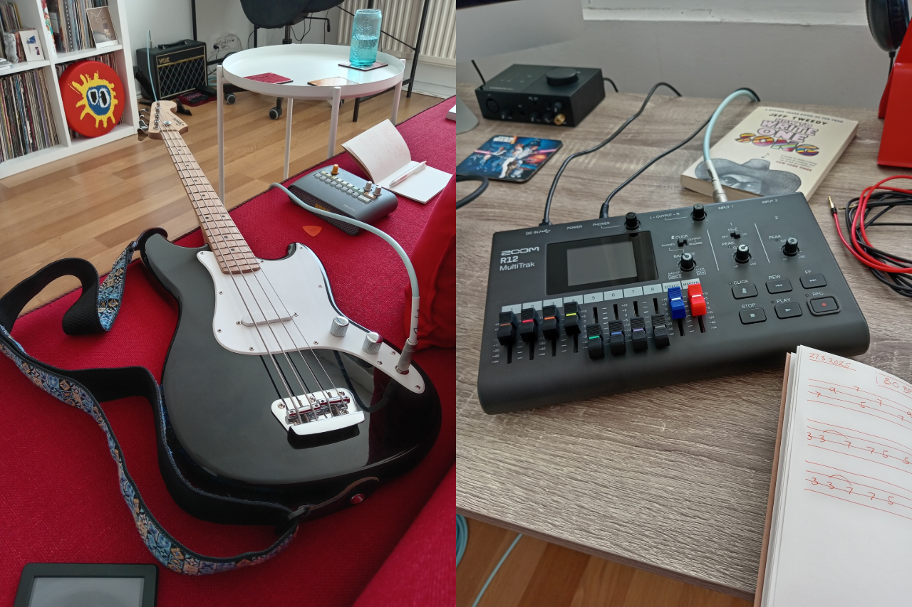

Work in Progress
Pure Data Experiments, 2025-
Transsexual Slowcore Demos, 2025-

Sketches for bass guitar and drum machine.
Trans woman artist living and working in Turku, Finland
Selected Works
Work in Progress
Museum of Unrealised Proposals
damiá modal music machine
trans- prefix (CHANGE)
Faircamp | Bandcamp
ruby at rubylouiserose dot com

Sketches for bass guitar and drum machine.